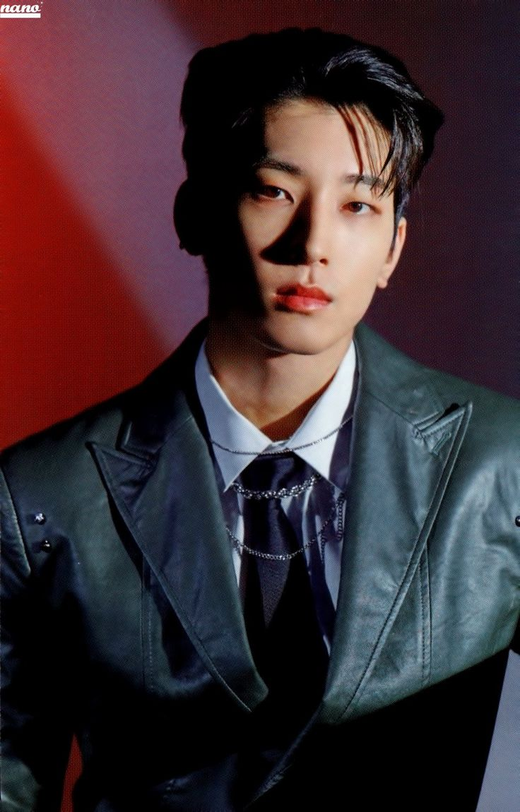

Lee Yoohan
akun utama ayang. awalnya aku pm ayang diakun ini pake akun tejo buat infoin rules GC manhwa boys buat kick member yang emang udah ga aktif, awalnya ayang udah lumayan ga aktif juga diakun ini, terus ternyata besoknya dibales yang berakhir malah aku modusin karena gabut:')
tapi ternyata kita punya banyak kesamaan yang buat kita nyaman ngobrolin hal random satu sama lain, sampe akhirnya aku nekat buat deketin ayang terus gas bikin akun Yoon Jay (pasangan di manhwa yang ayang muse in ini).


Jeon Wonwoo
aku tau akun ayang yang ini belum lama dan pas kita udah nikah. awalnya lagi bahas hal hal random aja terus tiba tiba ayang bilang lagi gemes sama pasangan WooSan dan Meanie, awalnya aku bingung Meanie ini siapa dan ternyata itu nama ship Wonwoo dan Mingyu dari SEVENTEEN, dan ternyata juga ayang punya akun human muse Wonwoo akhirnya aku gas rombak akun sebelah yang emang udah ga kepake buat ganchar jadi Mingyu deh.


Kim Euihyun
ini awalnya side account punyaku. cuma pas dapet info dari adekku (jingjing) kalau kamnu ada niatan mau rpin Euihyun akhirnya aku langsung rombak akun ini jadi muse Kim Euihyun (karakter omega, pasangan tejo di manhwa Low Tide in Twilight) biar bisa aku bucinin di akun tejo, terus aku kasih akunnya ke ayang. ini pas kita belum nikah tapi udah yakin satu sama lain ya yang, rlsannya juga pertama diakun ini terus baru diakun Yoohan ayang.
Yoo Taejoo
nah ini akun utama aku. awalnya aku nge rpin anak dari manhwa BL itu pakai muse Zhenya diakun yang udah Yoon Jay alias om burhan sekarang, terus baru rombak akun Jungkook ku yang ini jadi Yoo Taejoo dari manhwa Low Tide in Twilight. dan entah kenapa lebih nyaman aktif disini karena karakter tejo yang alay dan easy going buat di rpin:) awal ketemu dan deket sama ayang juga pake akun ini.
BONUS
Kim Euiyoung
ini akun dek Jingjing (adek iparku dan adik dari Kim Euihyun di manhwa Low Tide in Twilight). sengaja masukin dek Jingjing disini karena lumayan berperan penting dari awal aku ngedeketin ayang Leon, yang awalnya aku sama dek jingjing ini lagi bahas hal random dan aku minta cariin cemceman terus adek nyaranin buat deketin Leon diakun Yoohan nya. karena emang kebetulan aku mau pm all member gc manhwa boys yang ga aktif buat infoin rules baru dan kebetulan Yoohan termasuk yang ga aktif di GC pas itu jadi aku pm Yoohan juga, cuma pas dibales jadi keinget kalo adek nyaranin Yoohan sebelumnya dan akhirnya aku gas malah jadi modusin ayang dan ss pmnya ke adek buat pamer:) makasii banyak ya adek udah nyaranin Yoohan yang ternyata emang cocok banget buat om, ehehe.